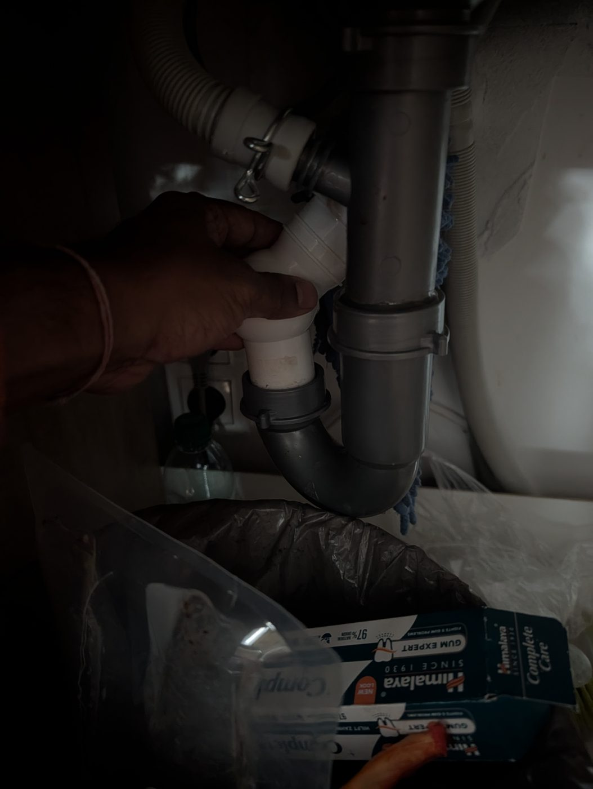
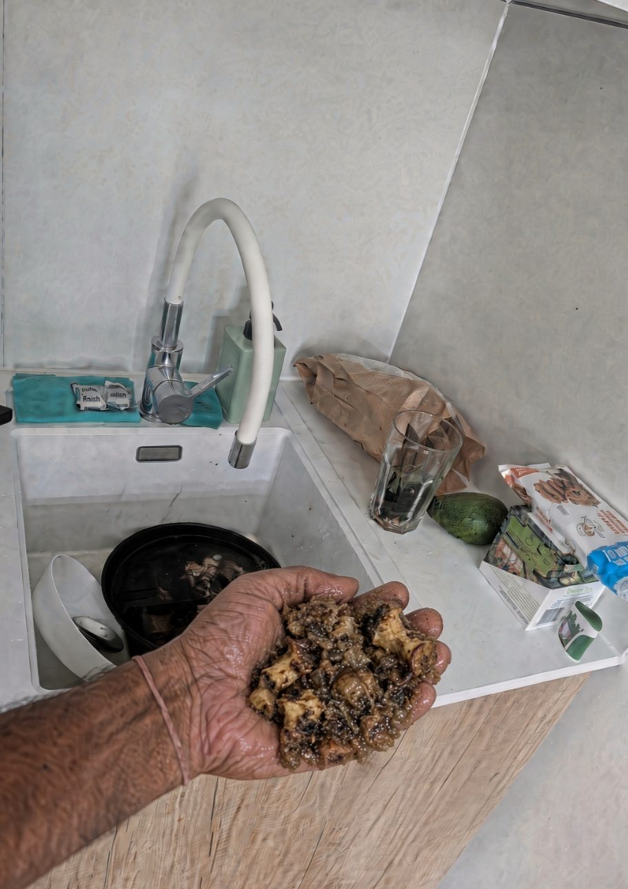
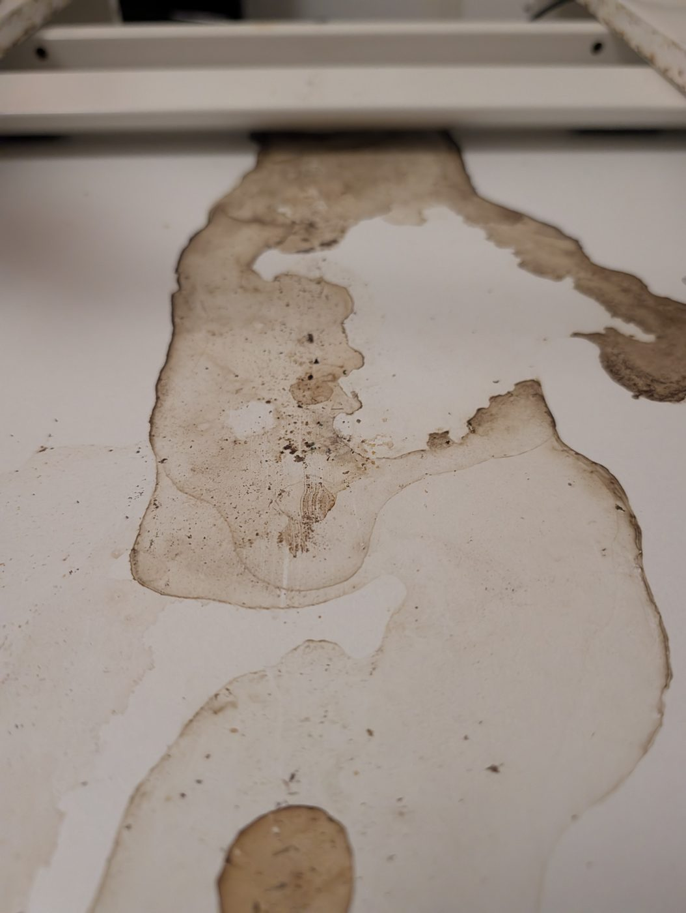
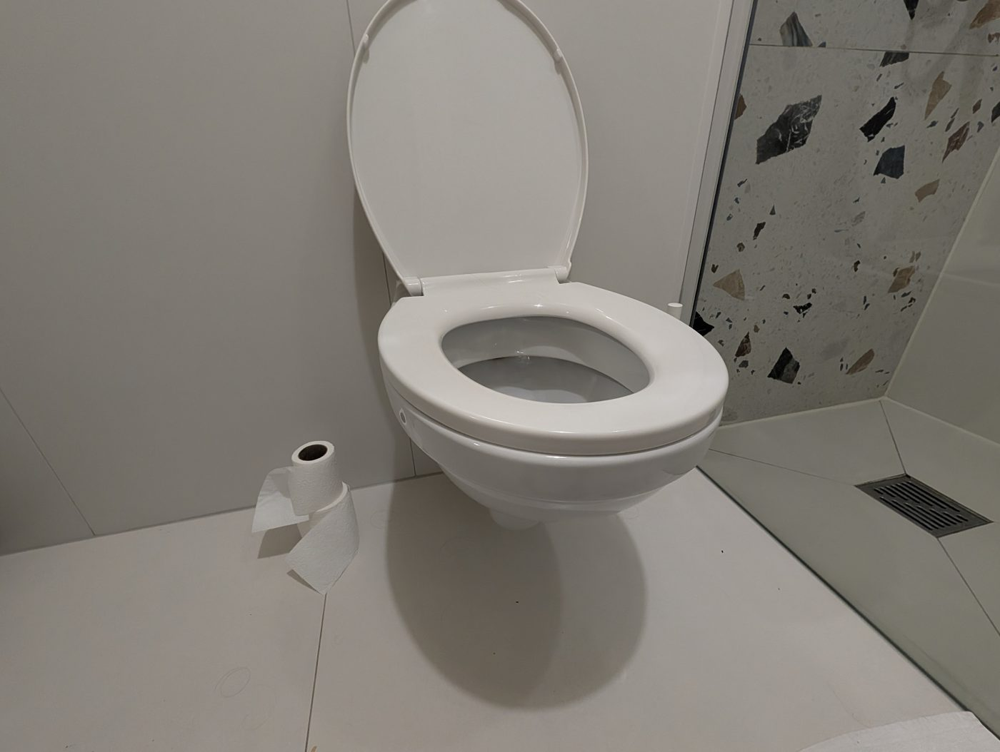
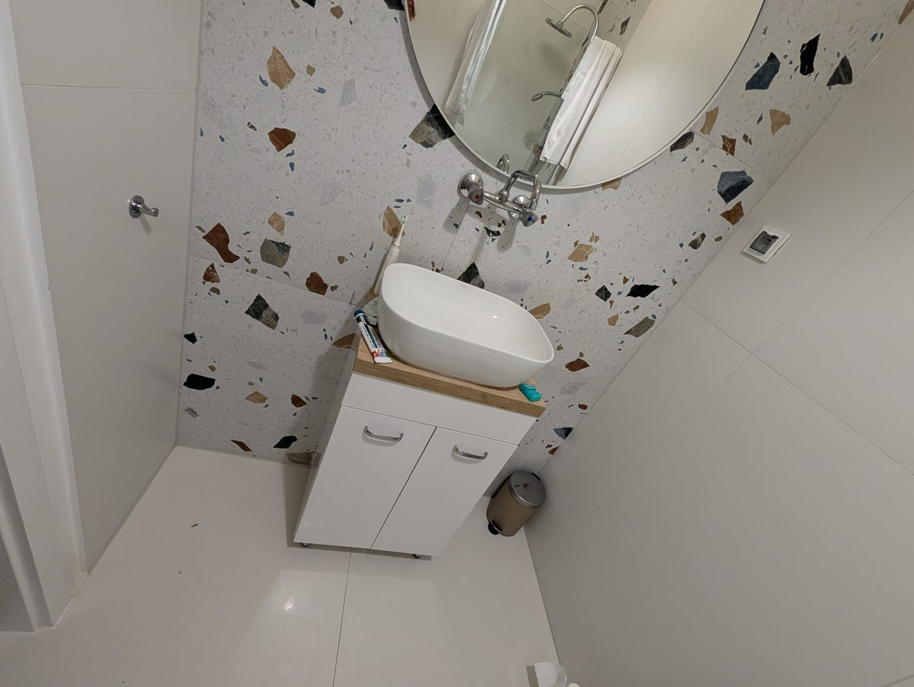
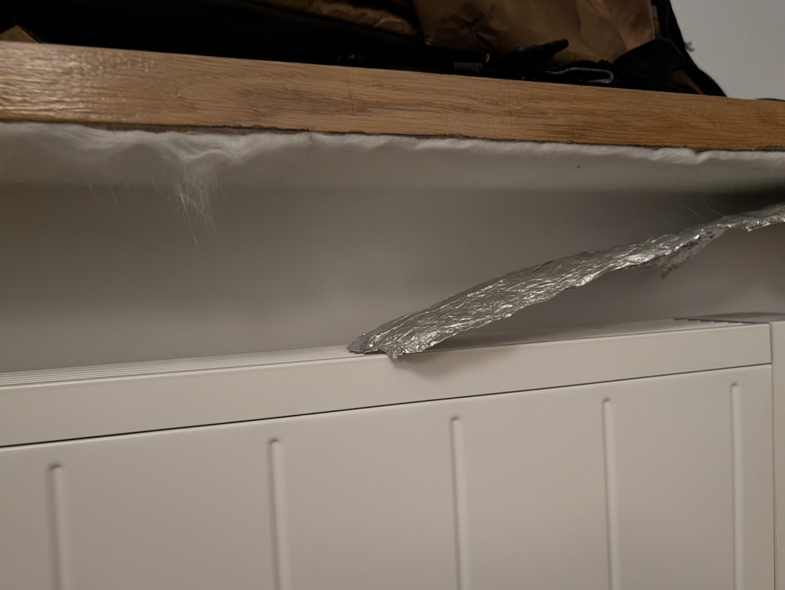
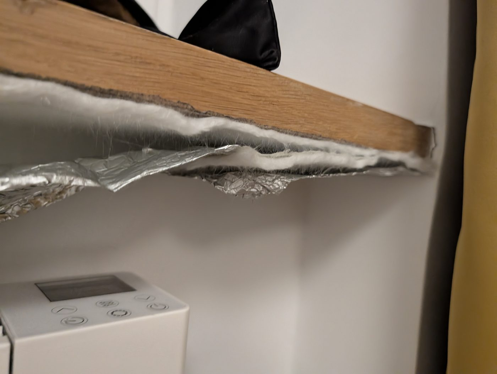
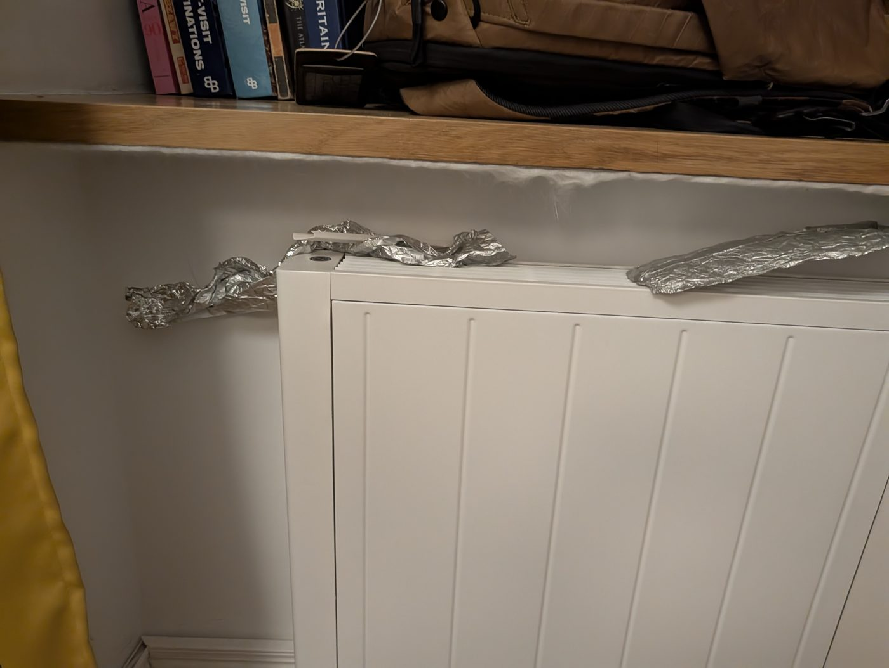
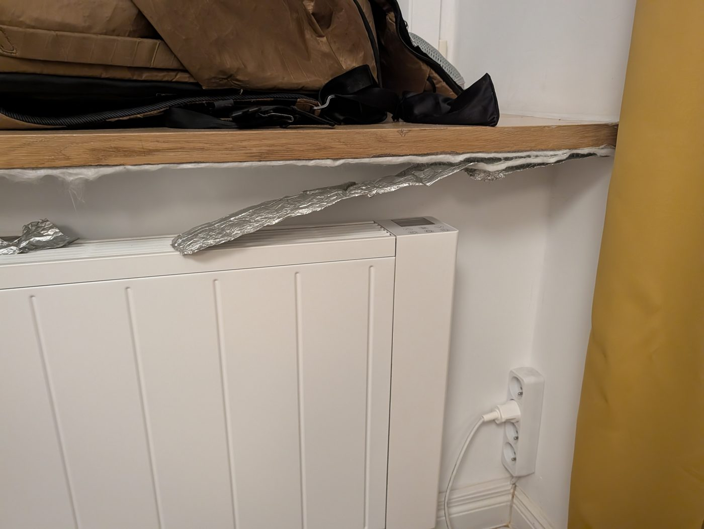

The case. BookingHost Sp. z o.o. is a Warsaw short-term-rental operator. In a fully documented case (booking BS-a9523-2220840985, Konopacka 15 apt. 8, 15 Oct – 1 Nov 2026, paid in full in advance: 2,909.44 zł), the guest reported a sewage smell on day 1 by phone (Oct 15 and 16) and by email from Oct 16.
The first week. Documented outcomes over the following 7 days: first reply after 43 h 14 min; 20 guest messages and 11 company replies; 0 confirmed technician visits (the service never entered the unit; two attendances on Oct 18 failed over a keys-in-lockbox requirement that had never been communicated); 0 relocations confirmed, although relocation was requested from Oct 19; three consecutive apartments chosen by the guest from the company's own current offer were each declared unavailable — in the first case (National Stadium Homely Studio) the company said the unit was "already occupied" for the whole period while its own booking calendar showed only Oct 21–24 taken and Oct 25 – Nov 1 bookable, a contradiction the guest evidenced with screenshots that the company never acknowledged; the Customer Service Manager's written promise to reply "within a few minutes" (Oct 20, 16:20) was never fulfilled; a photo of the drain was demanded as a formal precondition for passing the report to technicians from Oct 20, although it was first mentioned only on day 4 and the defect is an intermittent smell; the guest spent 3 consecutive nights with sleep broken by the smell, 2 nights sleeping at a friend's (lost value 342.28 zł), and about 13 hours of his own time on the case.
The escalation. On Oct 22 the guest sent management (Andrzej Stecki, Artur Stecki, Kacper Mocny) a formal escalation asking whether the company acts in good faith and whether a manager will personally commit to resolving the case; the full text is published below. The operator also failed to answer a relocation request naming a verified-bookable unit (Olszowa 14 Riverside) sent Oct 22 at 10:59, and a further defect report (internet outage) sent Oct 22.
Status. Status as of publication: UNRESOLVED. UPDATE 23–24 OCTOBER: on 23 October (09:25) BookingHost replied (Ewelina) with an apology, stated that relocation is possible only to units of an analogous standard and similar price range (in effect refusing the requested move), and offered (1) shortening the stay with a refund of the unused nights — no amount or payment date stated — and (2) a complaints-department process to determine a partial compensation for the days spent in the unit with the faults. The same day (16:28) the guest demanded in writing the exact refund figure, confirmation that compensation applies regardless of shortening, and check-out/key-handover details, by Saturday 24 October 12:00. That deadline passed with NO reply. The guest has therefore decided to vacate the unit on Sunday 25 October and to demand a 100% refund of the 2,909.44 zł paid, because his costs — alternative accommodation during the stay and days of lost ability to work — exceed the price of the unit. Further unit defects documented since: the dining table had never been cleaned; the bathroom has no counter space and the toilet paper sits on the floor (no holder), which is unhygienic; the hotplate is incompatible with the pots provided (too large for it, it resets the heat to a random level and food burns). The sewage smell itself has been resolved — by the guest, who unclogged the kitchen drain himself after days in which no one from the company came; photographs of the sludge he removed accompany his notice to the company. This page will be updated as the case develops.
23 October, 09:25 — BookingHost replied (Ewelina). The company apologised for the internet problems, the smell and the course of communication, admitting the standard encountered "does not reflect the quality of our services". On relocation it set a new limit: moves are possible only to apartments of an analogous standard and a similar price range; the requested Olszowa 14 Riverside move was not named and not granted. Instead it offered: (1) shortening the stay, cancelling the remaining nights and refunding the unused days — with no amount and no payment date stated; and (2) a complaints-department process to determine a partial compensation for the days spent in the unit with the faults, regardless of shortening.
23 October, 16:28 — the guest replied, asking for three things in writing by Saturday 24 October, 12:00: the exact refund figure for the unused nights (from his 2,909.44 zł payment) with the payment date and method; confirmation that the complaints compensation applies regardless of shortening, and by when it will be decided; and the check-out time and key handover if he shortens.
24 October, 12:00 — the deadline passed with no reply at all. The management escalation of 22 October also remains unanswered, as does any explanation of the Homely availability statement.
The guest's decision (24 October): he will vacate the unit on Sunday morning, 25 October, and demands a 100% refund of the 2,909.44 zł paid — because the cost of the failure to him is greater than the price of the unit: he had to find alternative accommodation during the stay, and for days he could not work effectively because of the unit's conditions (the odour that broke his sleep and drove him out, and the repeated internet failures).
The smell is fixed — by the guest. After days in the unit during which no one from BookingHost came, the guest opened the kitchen drain and unclogged it himself, removing the accumulated sludge that was causing the odour — confirming the diagnosis he had given the company on 18 October. Photographs of the sludge removed accompany his notice to the company.
Further defects of the unit, documented: the dining table had never been cleaned (dried spill stains and debris); the bathroom has no counter space at all, and the toilet paper sits on the floor because there is no holder — which is not hygienic; and the hotplate is incompatible with the pots provided — they are too large for it, it resets the heat to a random level, and food burns.
These are the guest's own photographs, shared with BookingHost on 24 October 2026 — the drain and table photographs with the vacate notice to the reservations team, and the full set with the management of the company. No BookingHost technician ever entered the unit; after days of inaction the guest opened the kitchen drain and cleared it himself.









A guest who did everything right — reported immediately, by phone and then in writing, supplied the diagnosis the operator asked for — met an organisation that runs on procedure instead of problem-solving: a photograph demanded of a smell; a lockbox condition nobody had mentioned, applied after it caused two failed visits; a relocation request ignored for days at a time; a manager's promise of a reply "within a few minutes" that never existed; and, when the guest finally picked replacement apartments from the company's own website, each declared unavailable in turn — the first of them contrary to the company's own booking calendar.
The four biggest offenses, documented below: (1) false information about availability, evidenced by the company's own calendar and never acknowledged; (2) a manager's written promise, broken; (3) seven days without a single remedial action — no technician, no repair, no relocation; (4) silence at the decisive moment — three emails on the evening of Oct 21, the last asking "can I still move tonight?", answered the next morning in two sentences on one point.
One fairness note, because this record is only worth anything if it is accurate: one refusal (Świętojańska Old Town Apartment, Oct 21) was checked by the guest against the unit's own booking panel and was correct — and is marked as verified accurate in the record below.
The purpose of this page is protective, not punitive: to make sure the next guest — and the next property owner thinking of handing BookingHost a unit to manage — finds this documented record before they commit. BookingHost's real customers are owners; the operational behaviour documented here (a unit left unrepaired for 7+ days, a guest displaced and documenting everything, availability claims contradicted by the operator's own system) is a ratings, refund and regulatory risk that lands on the owner.
Authorities (Poland). The case is being reported through the proper channels: the Warsaw Consumer Ombudsman (individual intervention, including the 342.28 zł of unused nights); Sanepid (sanitary conditions in paid accommodation); the Trade Inspection in Warsaw (WIIH — mediation and the consumer arbitration court); UOKiK (the pattern as a collective-interest practice); and the Praga-Północ District Office (whether the Konopacka 15 m. 8 unit is entered in the municipal register of facilities providing hotel services, as the Hotel Services Act requires).
Reviews and warnings — for guests. The same documented account is being posted where guests actually look: a Google review of BookingHost's company listing, Trustpilot, GoWork.pl, BookingHost's own Facebook and Instagram, and Reddit (r/warsaw, r/poland) — always under the same flags: "BookingHost Warsaw, Poland — red flags" and "BookingHost — beware before booking".
Warnings — for hosts and owners. A parallel account addressed to property owners is being published on LinkedIn, GoWork.pl and Polish landlord/owner communities, and in the "For property owners" section of this case record: what happens to your unit, your ratings and your guests when this operator meets a routine maintenance problem.
Video. A full video walkthrough of the documented record and short-form versions are in production and will be linked here.
If BookingHost resolves this. If the company relocates the guest, refunds the lost nights and answers the questions in the escalation, this page will be updated at the top to say so — the record itself stays, corrected wherever necessary. The warning purpose is served either way.
Is BookingHost Warsaw legit? It is a real, registered company (KRS 0000606096, operating since 2016). Legitimacy of the company and quality of its operations are different questions — this page documents the operations in one fully evidenced case.
What are the BookingHost red flags? From this record: defects answered with procedure instead of visits (a photograph demanded of an intermittent smell as a precondition for technicians); access conditions invented after they cause failures (keys in a lockbox); relocation requests left unanswered for days; availability statements that contradict the company's own booking calendar; and written promises ("within a few minutes") that are not kept.
What should I check before booking with BookingHost? Book in writing, report any defect in writing on day one with timestamps, screenshot the listing and the operator's calendar, and keep every reply. If something goes wrong, Warsaw's Consumer Ombudsman, Trade Inspection and Sanepid are the escalation routes.
I'm a property owner — what should I ask BookingHost? Ask what happens when a unit has a defect that needs a technician the same week: who attends, in what time, who pays for a displaced guest, and who answers for statements made to guests in your name. Then compare their answers with this record.
Has BookingHost responded? Yes, in part. On 23 October the company apologised and offered to shorten the stay with a refund of the unused nights (no amount or date given) plus a complaints-department compensation to be determined. It did not answer the guest's written demand for exact figures by 24 October 12:00 — that deadline passed in silence — and the management escalation of 22 October and the Homely availability question remain unanswered. The guest is vacating on 25 October and demanding a full refund of 2,909.44 zł; any further response will be recorded here.